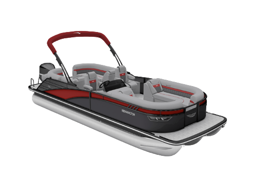

INFO
Boat Specefications
- MSRP: $142,991
- LOA: 25'-3"
- Beam: 8'6"
- Engine: Yamaha F200XD2
- Performance Package: ESP
- Floorplan: Fastback
- Exterior Main Color: Gemini Black
- Exterior Accent Color: Metallic White
- Rail Color Black
- Interior Main Color: Arctic Ice White
- Interior Accent Color: Perforated Carbon
- Interior Furniture Style/Trim: Pillowtop Diamond Stitched
What's New for 2027
2027 updates
- Powershade Bimini: The new PowerShade Bimini redifines onwater comfort with 10 feet of expansive shade coverage and effortless push-button operation. Designed to blend seamlessly into Bennington's premium styling, the PowerShade allows boaters to instantly adjust their environment without interupting the moment. The result is a more luxurious, comfortable, and enjoyable experience, helping passengers stay cool and relaxed from sunrise to sunset.
- Stage 3 Audio Package: Stage 3 Audio Package features a premium Rockford Fosgate sound system with a PMX-6BB source unit, PMX-R20 Aft remote, four RGB-capable speakers, and a 10" PMPS-10 subwoofer/amplifier combination. The result is rich, immersive sound and customizable lighting that bring a luxury entertainment experience to every day on the water.
- Comfort Step Ladder: Features wide, stair-style steps that provide easier, more comfortable boarding from the water. The ergonomic design improves stability and confidence for swimmers of all ages, creating a safer and more enjoyable on-water experience.
- New Ski Tow Bar: Ready for your next watersports adventure, Bennington's new reinforced ski tow bar is built to meet the latest industry towing standards for increased strength and durability. The upgrade design delivers added confidence when towing skiers and riders, while seamlessly integrating with the boat's premium fit and finish. More capibility, more confidence, and more fun for everyone on board.
Why This Boat
Key Selling Points
- The ESP tritoon performance package with a Yamaha F200 delivers sharper handling and stronger performance.
- Sleek Fastback profile gives the LX a sportier, more premium silhouette.
- Pillowtop Diamond-Stitched furniture brings a genuinely upscale, tailored interior.
- New PowerShade Bimini adds 10 feet of push-button shade for effortless comfort.
- Factory Ski Tow Bar, Stage 3 audio, and Comfort Step ladder make it entertainment- and watersports-ready.